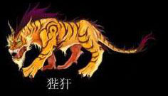
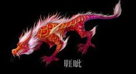
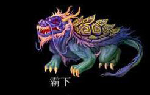
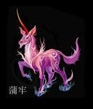
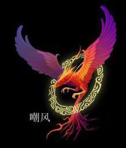
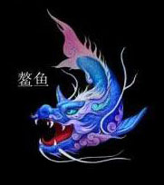
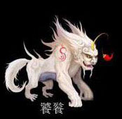
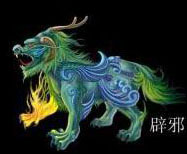
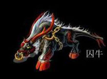

狴犴，又名宪章，样子像虎，有威力，好狱讼，却又有威力，人们便将其刻铸在监狱门上，故民间有虎头牢的说法。狱门上部那虎头形的装饰便是其遗像。又相传它主持正义，能明是非，秉公而断，再加上它的形象威风凛凛,因此它也被安在衙门大堂两则以及官员出巡回避的牌上端，以维护公堂的肃然之气。

睚眦，平生好斗喜杀，刀环、刀柄、龙吞口便是它的遗像。这些武器装饰了龙的形象后，更增添了慑人的力量。它不仅装饰在沙场名将的兵器上，更大量地用在仪仗和宫殿守卫者武器上，从而更显得威严庄重。

霸下和龟十分相似，但细看却有差异，霸下有一排牙齿，而龟类却没有，霸下和龟类在背甲上甲片的数目和形状也有差异。霸下又称石龟，是长寿和吉祥的象征。

蒲牢，形似盘曲的龙但比龙小，平生好鸣好吼，洪钟上的龙形兽钮是它的遗像。原来蒲牢居住在海边，虽为龙子，却一向害怕庞然大物的鲸鱼。当鲸鱼一发起攻击，它就吓得大声吼叫。人们根据其“性好鸣”的特点，“凡钟欲令声大音”，即把蒲牢铸为钟纽，而把敲钟的木杵作成鲸鱼形状。敲钟时，让鲸鱼一下又一下撞击蒲牢，使之“响入云霄”且“专声独远”。

嘲风，不仅象征着吉祥、美观和威严，而且还具有威慑妖魔、清除灾祸的含义。嘲风的安置，使整个宫殿的造型既规格严整又富于变化，达到庄重与生动的和谐，宏伟与精巧的统一，它使高耸的殿堂平添一层神秘气氛。

又名鸱尾或鸱吻，鱼形的龙（也有说像剪了尾巴的蜥蜴），龙形的吞脊兽，口阔噪粗，平生好吞，殿脊两端的卷尾龙头是其遗像，即殿脊的兽头之形

十分贪吃，见到什么就吃什么，其形象常纹饰于青铜器上。

又名无禄、辟邪。能吞万物而从不泄，故有纳食四方之财的寓意。

囚牛，平生爱好音乐，它常常蹲在琴头上欣赏弹拨弦拉的音乐，因此琴头上便刻上它的遗像。这个装饰一直沿用下来，一些贵重的胡琴头部至今仍刻有龙头的形象，称其为“龙头胡琴”。